遊びで植物を育てよう
2024/11/10
実生のサザンカにツボミが出来ました。
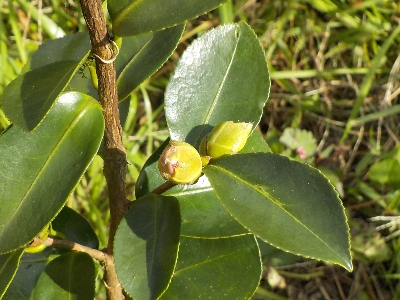
5年前に拾ったタネが育って、花が咲きそうです。
別にもう１本あって、そっちもつぼみが出来ています。どんな花が咲くか楽しみです。
【サザンカTOP】
【木TOP】
【園芸TOP】
2024/11/04
サザンカの小さい花が咲いていました。
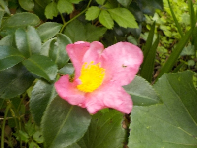
今家で咲いてるのはこれだけ。今年は開花が遅いです。
もうちょっとしたら沢山咲くかな。
【サザンカTOP】
【木TOP】
【園芸TOP】
2024/03/17
ツツジの下に生えてたサザンカです。
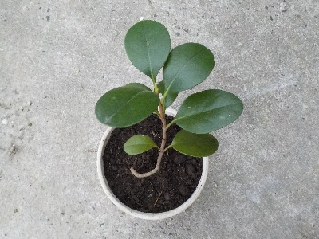
ツツジの茂みに丸っこい葉っぱの木が生えてました。
たぶんサザンカ。
引っこ抜いて植木鉢に植えました。
【サザンカTOP】
【木TOP】
【園芸TOP】
2022/11/23
このサザンカは今が見頃です。
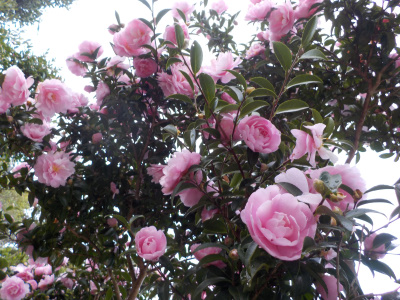
こんなのを見ると家にサザンカがあって良かったって思います。
来年も見れるように管理しないといけないです。
【サザンカTOP】
【木TOP】
【園芸TOP】
2021/12/05
サザンカが綺麗だったので写真を撮りました。
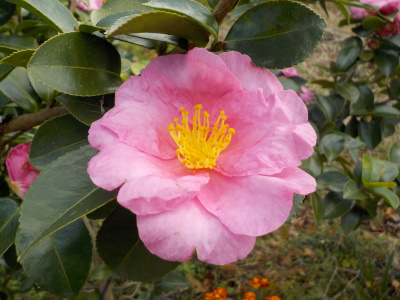
花が開ききった状態で、どこも傷んだ感じのない花がありました。
こんな状態の花が沢山咲いてるといいんですけど、なかなかそんな事にはならないですね。
【サザンカTOP】
【木TOP】
【園芸TOP】
2021/10/23
サザンカの花が咲いていました。
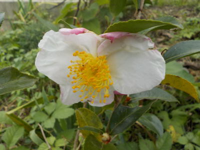
サザンカが咲きだしました。なんとなく冬な気分です。
コタツやストーブを出そうと思いました。
【サザンカTOP】
【木TOP】
【園芸TOP】
2021/05/15
サザンカの挿木が枯れました。
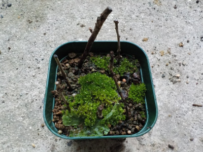
根っこもちゃんと出て育っていたんですが、枯らしてしまいました。
残念。
サザンカは実生が育っているので挿木はもうなくていいかな。
【サザンカTOP】
【木TOP】
【園芸TOP】
2021/04/04
サザンカの水耕栽培をやめました。
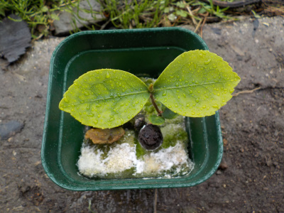
水耕栽培は土を使わないのでクリーンな感じがしますが、長期間になるとカビとか藻が生えて汚くなりますね。
汚いのを置いておくのも嫌なので土に植替えました。
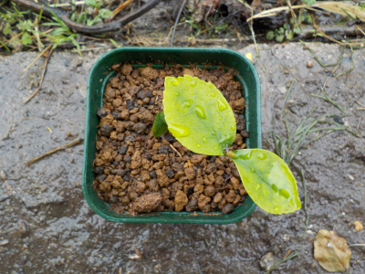
植物は土が一番合いますね。
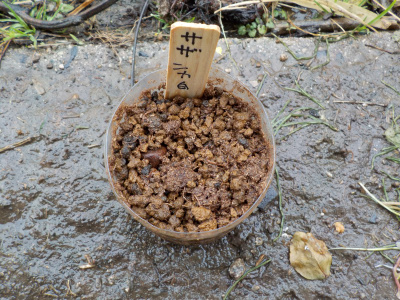
サザンカの種蒔きもしました。
種は親と違う花が咲くのでいいですよね。
どんな花がさくんだろうと思うと楽しいです。
【サザンカTOP】
【木TOP】
【園芸TOP】
2020/11/23
サザンカに虫が寄ってきていました。
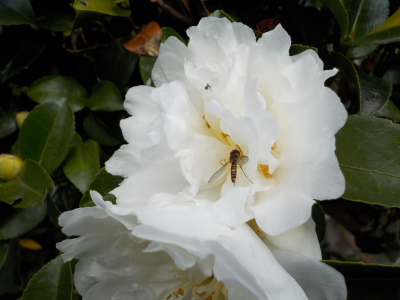
いい匂いがするのか、小さい虫がサザンカに集まっていました。
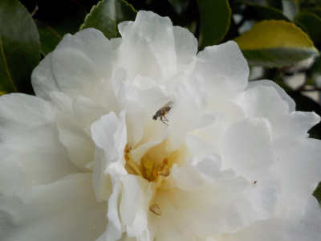
花が白いので虫がいるのが目立つのかな。
【サザンカTOP】
【木TOP】
【園芸TOP】
2020/11/08
白系のサザンカを増やしたかったので種を採りました。
2020/11/01
サザンカが咲きだしました。
2020/07/04
ペットボトルの挿し木の威力は凄いですね。
2020/06/14
サザンカの挿し木は発根していませんでした。
2020/06/07
サザンカの挿し木にナメクジがいました。
2020/04/18
サザンカを土に植え替えしました。
2020/03/14
サザンカをプラ鉢に移しました。
2020/03/01
サザンカの挿し木をしました。
2020/02/29
サザンカの根はピンク色でした。
2019/11/30
サザンカの種を採りました。
【サザンカTOP】
【木TOP】
【園芸TOP】
種から木を育てます。
【おいしいものを食べよう。】【たくさん寝よう。】
【ソロ活をしよう!】【季節感のあることをしよう。】【動画視聴はほどほどに。】【当サイトの全てのコンテンツは無断転載禁止です。】